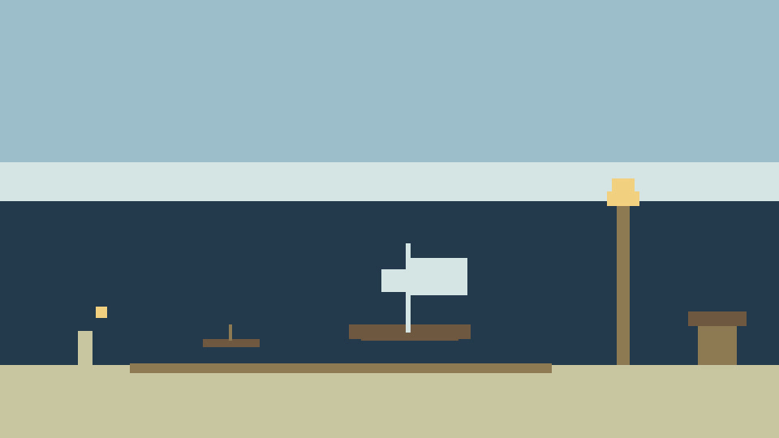

Where to open it
The office is in the Lab, under Build and manage, and at games/saltmarsh-shipping/. Mouse or tap. The goal line is a button: it names the next thing and scrolls to it. A button you cannot use yet says why.

The first three cargoes
The window says “Row this cargo. Three trips, and a second boat can tie up.” The button reads “Row this cargo” and shows 5 coins. Row it three times. After that the button stays “Row the skiff”, and a skiff trip pays about three seconds of whatever the office is earning. The skiff is still yours. You can row it whenever you like.
While this page is open, including a hidden tab, the boats earn the full rate. Close the page and the office pays half, and only what the sheds can hold: two hours for each shed, and at most four sheds. Come back and the log says “While you were away”, with the hours that counted and what the captains landed. Captains are people on a timed haul. They are not a multiplier on the boats. The same stretch of a haul pays once.
Boats, then captains
You buy a Rowboat, a Sloop, a Schooner and a Bark. Buy one, ten, or as many as the button will allow. When Max cannot buy even one, the card says what one costs.
- Tie up rowboats until the goal says “Ask Capt. Wren to take the pier.” That is eighteen rowboats. She counts every coin aloud, and a gull always takes one.
- Sloops open once thirty-two rowboats are tied up. At ten sloops the fleet chart unrolls, and the desk asks you to choose lighter sloop hulls or another shed. Taking one locks the other. Capt. Bramble can be asked once the sloops are in. She waits for the kettle, then brings the tea money with the haul.
- At ten schooners the same kind of choice returns: deeper schooner holds, or another shed. Ten schooners also open the trade routes. Capt. Hollis can be asked. She marked the headland.
- Barks come next. Ten barks, and the goal can ask Capt. Pell to take a bark. She takes the deep water slow. Twelve barks put a choice on the desk: a lamp on the quay, or deeper bark holds. Taking one locks the other. Sixteen barks light a house lamp in the office window. That lamp is not the quay lamp, and it is not one of the four lighthouses.
The first shed is already standing. Further sheds cost more, and a shed you pass, because you took the fitting instead, costs more when you come back to it. When the yard is full, the button says “The sheds are full.”
Once two routes are sailing, the quay choice is already settled, and fewer than five routes are out, the desk offers a bell on the pier or coal for the night runs. The goal says “Pick bell or coal on the desk.” The cards are “A bell on the pier” and “Coal for the night runs.” One of them, not both.
The six runs
You pick where the next contract goes. A price on the desk stays until you sign that card. Signing one does not raise the others still on the desk. A spare sail can be bought for a route that is already sailing. The runs, in the chart’s order:
| Run | What the card says |
|---|---|
| Kelp Road | Safe and close. The pay is sure. A short run inside the bar. |
| Gull Rock | More coin, if the gulls leave the pile alone. Wren’s count keeps more of it. |
| Tea Reach | Bramble knows this water. The run pays better once the kettle has been boiling. |
| Hollis Headland | It shows once Hollis has marked the chart, or once two other routes are sailing. A long leg. |
| Reed Channel | Pell takes it slow, and it pays. She names the boat that goes. |
| Night Cut | Fast, and part of the cargo can vanish before a lighthouse is burning. |
Four lighthouses, then the last voyage
There are four lighthouses: the Pier Lighthouse, the Headland Lighthouse, the Reed Lighthouse and the Quay Lighthouse. Raising one leaves the other prices where they were. A lighthouse you cannot raise yet says why.
- The Pier Lighthouse keeps Gull Rock and the Night Cut whole.
- The Headland Lighthouse makes every route pay sooner.
- The Reed Lighthouse shows the road for the last voyage.
- The Quay Lighthouse pulls harder on Wren’s and Bramble’s routes.
When all four are burning, the desk tells you how many minutes until the voyage list opens. The list is eight preparations, and each price is a number of coins: food for the crew (fresh food or salt pork), canvas for the sails, coal for the lamps, a pilot for the bar or a bought chart, water casks, a new anchor cable, a house flag, and the tide table. When the list is packed, Set sail is the button that ends the office.
The ending, the credits and the totals stay in the office window. The last voyage is home, and the lighthouses stay lit along the Saltmarsh coast. Then you can open a new harbour and ask one captain to come across. Charts from a long watch can show a route before its season on that next harbour.
Still being built
A further pass is in progress and is not in the office you can open today. It is meant to make the ending feel more like the close of a watch, add events in the middle of the day, and give the return more feel. The office already has the ending, the route choices, the four lighthouses, and the away log described above. Capt. Wren and Capt. Pell stay. Do not expect a fifth lighthouse, or a light called the Bar Light. The house lamp in the window is not a coast light.